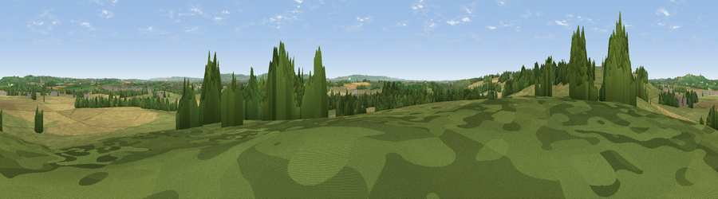

Viewpoint near Upper Winchendon
#31317 in England · top 44% of its area beats it · near Upper WinchendonThe view, rendered

A 360° render of this exact spot computed from the terrain model, tree cover and land cover — summer colours, afternoon light, calibrated against photographs of famous viewpoints. Real trees, hedges and buildings will differ in detail.
The panorama
Grey silhouette: terrain skyline in each direction (720 bearings, Earth curvature and refraction included). Dashed green: skyline with trees (+15 m) and buildings (+8 m) as obstacles. Blue strip: how far the ground is visible on each bearing.
Where the view opens
Wedge length = distance to the farthest visible ground on that bearing (vegetation-aware). Rings at 10, 25 and 50 km.
What fills the view
47% grassland · 36% cropland · 14% woodland · 3% built-up
Angular shares of the visible panorama (visual magnitude), not map area. Landscape diversity 0.48 (0–1 Shannon).
Key numbers
More beautiful places nearby
The staircase of upgrades: each row has a higher view potential than everything closer. Driving times are estimates from straight-line distance, calibrated against real road routing — check an actual route before setting out.
| Place | Direction | Drive | Score |
|---|---|---|---|
| Viewpoint near Upper Winchendon | WNW · 1 km | ~3 min | 58.0 |
| Viewpoint near Upper Winchendon | WSW · 3 km | ~8 min | 58.9 |
| Viewpoint near Ashendon | W · 6 km | ~14 min | 65.0 |
| Beacon Hill | SE · 11 km | ~21 min | 72.7 |
| Coombe Hill Monument | SE · 11 km | ~22 min | 75.5 |
| Viewpoint near Woolstone | WSW · 55 km | ~76 min | 76.7 |
| Viewpoint near Meon Vale | WNW · 67 km | ~90 min | 77.0 |
| Broadway Hill | WNW · 69 km | ~92 min | 77.7 |
51.82678, -0.88810 · source: screening · position refined by local search. Computed location — check access rights before visiting.